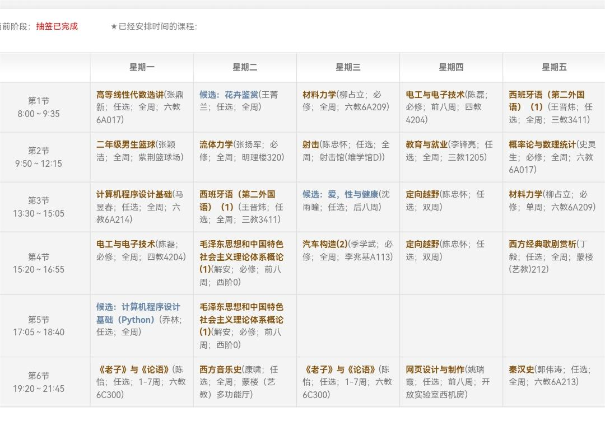
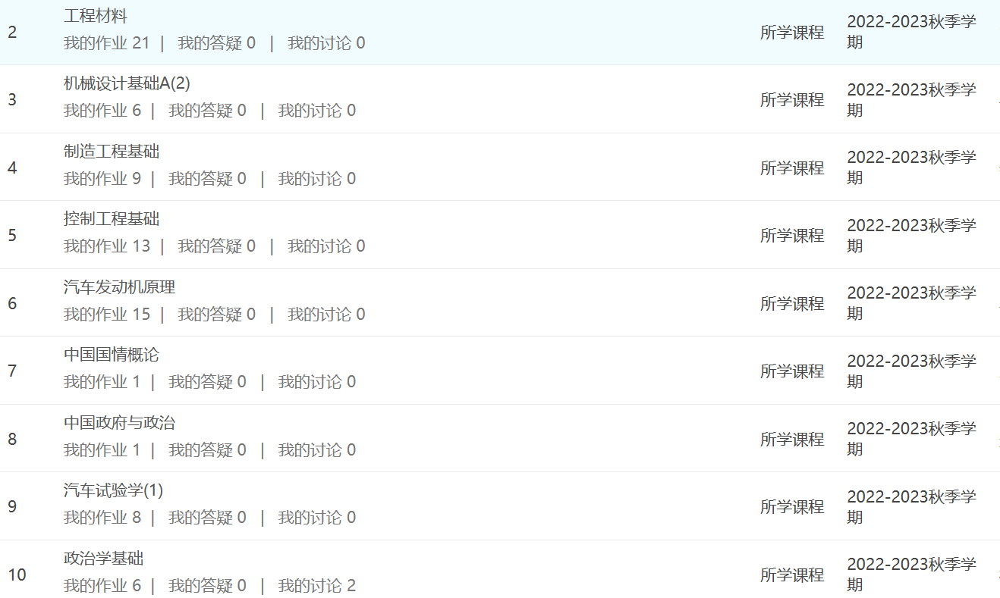

| |
纪念一下大二时因为不知名原因可以选这么多的课的一次经历,也是开始猛猛努力的第一学期( •̀ ω •́ )y
最后留了31学分，全部上完后确实感觉很有成就感
当然也是为了用数量拉高大一的低绩点，还算有效果
还成功地获得了当年的校设综合优秀奖
我个人觉得自己的努力还是得到了很不错的回报，后面也是在继续努力
累也是真的累，不是在教室就是在图书馆
|
 |
|  |
我大三辅修了公共管理学院的行政管理
这是当时秋季学期补学分选了不少该方向的课
刚接触这方面当时也很感兴趣，收获是很多的
不过下半学期因为要考虑推研，就适当调整了下，所以大四我得补上(￣﹏￣；)
当时还考虑要不要去深耕计划，后来又放弃了
分析了下自己的性格，可能这条路对我而言不是很合适
|
图文无关(仅仅属于强迫症的一点表现)
至于其他经历也有不少，挑一些代表性的聊聊
大一的芯动计划造智能小车，当时和几个行健的同学线上合作，虽然没得奖，不过经历很新奇
大二的合肥乡村振兴实践，和不同学校的同学去社会实践，体验了一把社会实践的流程与快乐(x)
还是做了一些工作的，最后获评了校级铜奖支队，毕竟没过度去追求这个
大三的上汽捷能实习,去国企工作了一个月，课题任务其实不重，周末还可以去周边玩一玩
|
|
|
| |